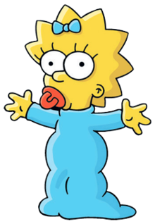

In what concerns the continuous evaluation solving exercises grade during the semester, you should submit until 23:59 of November 8th
(this exercise will still be available for submission after that deadline, but without counting towards your grade)
[to understand the context of this problem, you should read the class #05 exercise sheet]
In this problem you should submit a function as described. Inside the function do not print anything that was not asked!
The name of the .py source file you submit to Mooshak should NOT start with a digit (you will get an error if you submit it like that).

Maggie Simpson, the silent but observant baby of the Simpson family, is having an especially playful day. She's surrounded by her favorite toys: her pacifier, a teddy bear, a toy train, a building block, and her beloved stuffed rabbit. Maggie lines them up in a row on the floor, delighting in the colorful sequence. But after a few minutes, she gets an idea - she wants to see what the row of toys would look like if each toy moved one spot over, with the last one coming around to the front.Write a function rotate(lst, dir) that given a list lst rotates it to the right (if dir is"right") or to the left (if dir is "left").
A rotation to the right means shifting all elements one position to the right (with the last element coming to the front). For instance, the list [1,2,3,4] rotated to the right becomes [4,1,2,3].
A rotation to the left means shifting all elements one position to the left (with the first element going to the back). For instance, the list [1,2,3,4] rotated to the left becomes [2,3,4,1].
The following limits are guaranteed in all the test cases that will be given to your program:
| 0 ≤ |lst| ≤ 100 | Number of elements in list |
| Example Function Calls | Example Output |
lst = ["pacifier", "teddy", "train", "block", "rabbit"] rotate(lst, "right") print(lst) rotate(lst, "right") print(lst) rotate(lst, "left") print(lst) empty = [] rotate(empty, "left") print(empty) |
['rabbit', 'pacifier', 'teddy', 'train', 'block'] ['block', 'rabbit', 'pacifier', 'teddy', 'train'] ['rabbit', 'pacifier', 'teddy', 'train', 'block'] [] |